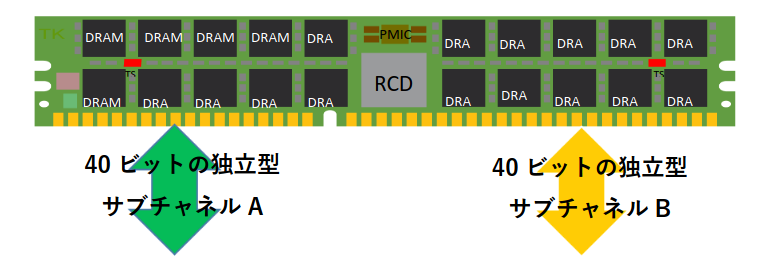

メモリチャネルとは？
Definition 1 メモリチャネル
- CPUとメインメモリ（RAM）間の64bit データ伝送経路(物理バス)の数のこと
- チャネル数が多ければ多いほど，一度に転送できるデータ量が増え，結果的にシステムのパフォーマンスが向上
- 扱えるチャネル数はCPU側で決まる
CPUがメモリにアクセスする際に，CPU上のメモリコントローラを介して，このチャネルを通してデータの読み書きを行います． 複数のチャネルが同時に動作（＝マルチチャネル）することで，メモリの帯域幅が増加します．
Question: メモリスロットとは違うのか？
- Answer: メモリスロット数 ≠ メモリチャネル数
- メモリチャネルはCPU内蔵メモリコントローラ（IMC）が持つ独立した通信路
- メモリスロットとはDIMMを挿すための物理的な差し込み口
Question: どのメモリがどのチャネルを利用しているのか
どのメモリがどのチャネルを使用しているかは dmidecode で確認することが出来ます
$ sudo dmidecode -t memory | less
...
Handle 0x0013, DMI type 17, 92 bytes
Memory Device
Array Handle: 0x000E
Error Information Handle: 0x0012
Total Width: 64 bits
Data Width: 64 bits
Size: 32 GB
Form Factor: DIMM
Set: None
Locator: DIMMA2
Bank Locator: P0 CHANNEL A
Type: DDR5
Type Detail: Synchronous Unbuffered (Unregistered)
Speed: 4800 MT/s
Manufacturer: A-DATA Technology
Serial Number: 00xxxxxx
Asset Tag: Not Specified
Part Number: AD5U480032G-B
Rank: 2
Configured Memory Speed: 4800 MT/s
...上記から以下の情報を読み取ることが出来ます
| dmidecode項目 | 表示例 | 何を意味するか |
|---|---|---|
| Bank Locator | P0 CHANNEL A |
CPUソケット0 (P0) の メモリチャネルA に接続 |
| Locator | DIMMA2 |
マザーボード上の 物理メモリスロット名 |
| Total Width | 64 bits |
DIMM全体のバス幅 |
| Data Width | 64 bits |
CPUから見える 有効データ幅 |
| Rank | 2 |
Dual Rank DIMM（1枚のDIMM内に2 Rank） |
| Type | DDR5 |
メモリ世代（DDR5） |
| Speed | 4800 MT/s |
メモリ転送レート（メガトランスファ/秒） |
| Configured Memory Speed | 4800 MT/s |
実際に動作している速度 |
| Form Factor | DIMM / SODIMM |
モジュール形状 |
| Memory Technology | DRAM |
揮発性メモリ |
ランクとは？
Definition 2 ランク
上記のメモリは DIMM となっています．DIMMとは Dual Inline Memory Moduleの略で，複数のDRAMチップをプリント基板上に搭載したメモリモジュールのことです． DIMM内のDRAMチップのうち，メモリコントローラとのアクセスに用いられるアドレス・ラインを共有し，同時に選択される DRAM チップの集合を Rank（ランク）と呼びます．
１つのランクは64ビットの単位で入出力をします．１つのメモリチャネルが64 bitであることに対応しており， 1 Rank がちょうど 1 メモリチャネルを占有して通信する構造になっています．
そのため，
- 1 チャネルあたり同時にアクセスできる Rank は 1 つのみ
- Dual Rank DIMM では，Rank 0 と Rank 1 を 時間的に切り替えて使用する
という動作になります．
DDR5 と サブチャネル

「DDR5メモリは1枚でデュアルチャネル」という言葉をよく耳にしますが，たしかに標準のDDR5モジュールは 2 つの独立型 32 bit サブチャネルを備えています． これはDDR5が 1つの64 bitメモリチャネルを内部的に分けて使用することを意味します．
つまり，
- DDR5は「メモリバス幅を広げた」のではなく64bit バスを 2 つの 32bit に分割して“使い勝手を良くしただけで，1つのDDR5メモリで２つのCPUメモリチャネルを専有するわけではない
- DDR5 モジュールは，CPU からは 64bit 幅のメモリチャネルとして接続されているが，DIMM 内部ではこの 64bit データ経路が 2 つの独立した 32bit サブチャネルとして論理的に分割 されているだけ
- デュアルチャネルはあくまでDIMMの中の話
CPU メモリチャネル（64bit）
│
├─ Sub-channel A : 32bit
└─ Sub-channel B : 32bit- ECCメモリを用いた例のため（Error Correcting Code）
- ECCメモリは，メモリ故障などに起因して 1 bitの反転エラーが発生したときに，それを検知・自動補正ができるようにするための誤り訂正符号(ECC)と呼ばれるパリティ情報が付与されたメモリ
- メモリ故障が発生するとECCメモリではない場合，OSレベルの異常終了になってしまうが，ECCメモリの場合ではOSが以上を検知してアラートを出してくれる
- アラート発報後，通常終了を行いメモリを交換というアクションが可能
- 40 bit = 32 data bit + 8 ECC bit
Example 1 (AMD Ryzen Threadripper PRO 9975Wと理論メモリ帯域)
公式仕様を確認すると
- メモリ規格：DDR5 RDIMM
- メモリチャネル数：8 チャネル
- 最大転送レート：6400 MT/s
まず１チャネルあたりのメモリ帯域は
\[ 6,400 \operatorname{MT/s} \times 64 \operatorname{bits} = 51,200 \operatorname{MB/s} \]
これを合計 8 チャネルで使用できるとすると
\[ 51,200 \operatorname{MB/s} \times 8 = 409.6 \operatorname{GB/s} \]
Appendix: メモリテクノロジー
| 観点 | SRAM | DRAM |
|---|---|---|
| 名称 | static random access memory | dynamic random access memory |
| 特徴 | 速度 | 容量・SRAMより安価 |
| どこにある？ | CPUの中 | CPUの外 |
| データサイエンス/数値計算 | キャッシュヒット率が重要 | 帯域・チャネル数が重要 |
random accessとは？
- 磁気テープ装置は順を追ってしか読み書きできない
- RAMでは，どの部分を読み出すにもかかる時間は同じ
DRAMはなぜSRAMよりも容量が大きいのか？
- 1ビットあたりの回路が極めて小さい
- 同じシリコン面積ならDRAMの方が圧倒的に多くのビットを実装できる
- ビットあたりのトランジスタもDRAMは1ビットあたり1トランジスタ，SRAMは1ビットあたり6トランジスタを必要 → 製造コスト・歩留まりの面でもDRAMが有利
Dynamic vs static
DRAMはキャパシタに電荷を蓄えることで情報を保持します．電荷は時間とともに漏れるため，一定周期でのリフレッシュ（再書き込み） = Dynamicが必要となります． 一方，SRAMは電源が供給されている限り状態を保持できるため，このリフレッシュが不要のため，静的 = static と呼ばれます．
メモリテクノロジー別アクセス時間・コストテーブル
| 種類 | 代表例 | 代表的アクセス時間（レイテンシ） | 1GiBあたりのコスト感 (2012年) |
主な用途 |
|---|---|---|---|---|
| SRAM | CPU L1/L2/L3 Cache | 0.5〜2.5 ns | 500 ~ 1,000ドル / GiB | キャッシュ，レジスタ |
| DRAM | DDR4 / DDR5 | 50〜70 ns | 10 ~ 20ドル / GiB | メインメモリ |
| フラッシュ半導体メモリ | NAND（SSD, NVMe） | 50〜500 µs | 0.75 ~ 1ドル / GiB | ストレージ（高速） |
| 磁気ディスク | HDD | 5〜20 ms | 0.05 ~ 0.1ドル / GiB | 大容量保存 |